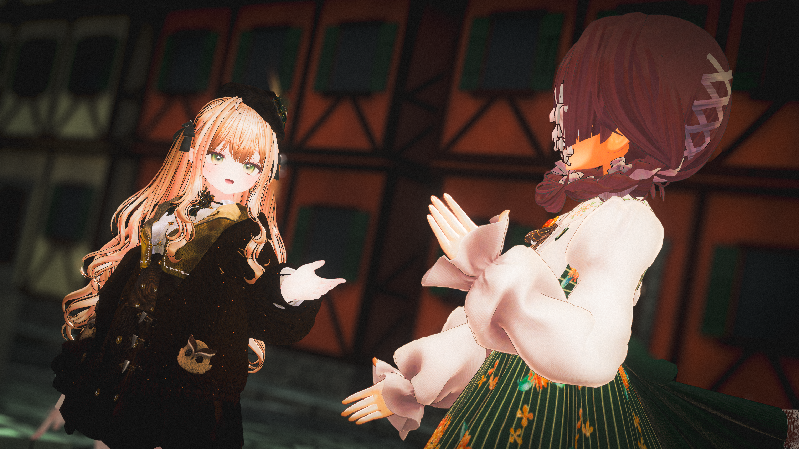
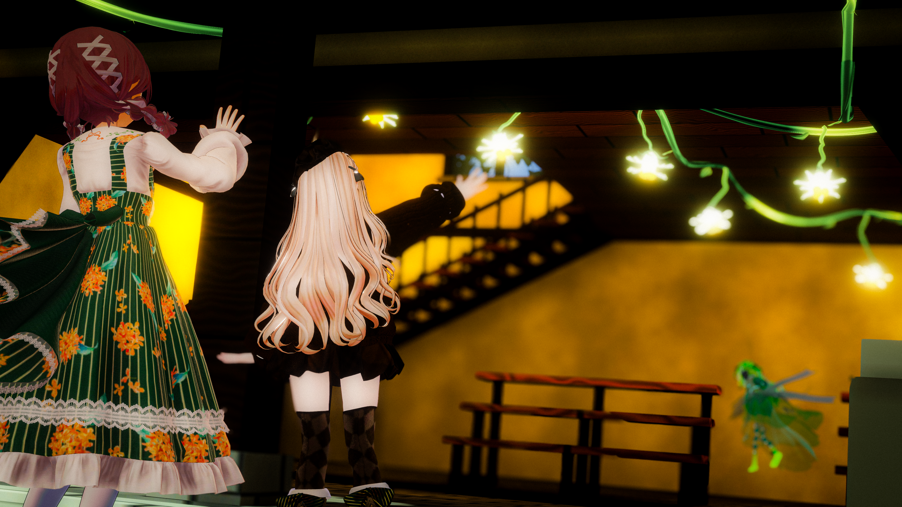
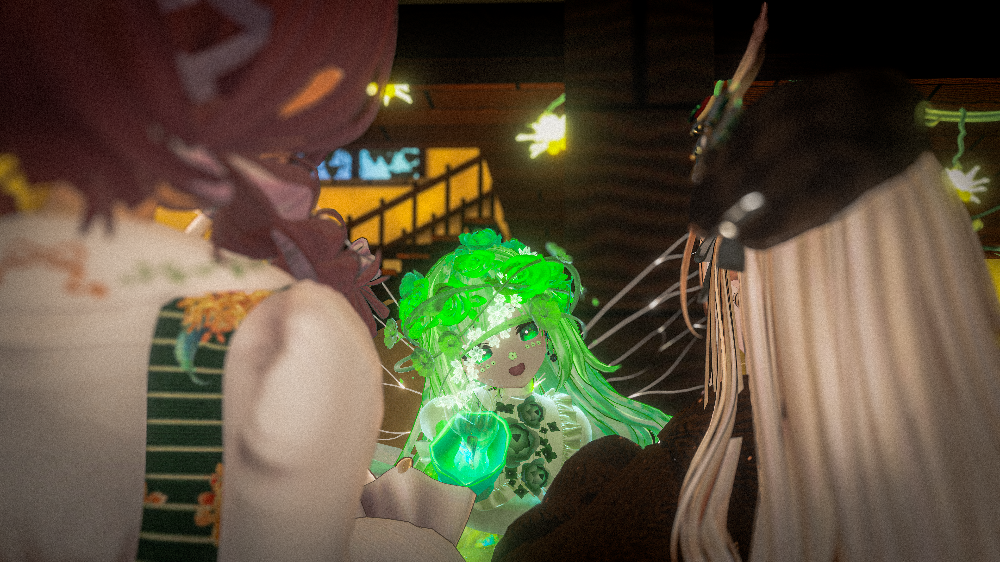
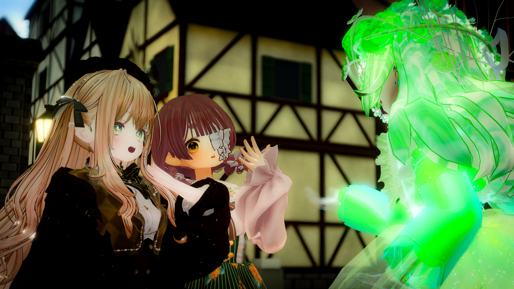

Diary
追憶-シャイニー✿ペタル-
2026.11.16

静かな少女と、金髪の少女。 ふたりの弾む声が、青い花の妖精を呼び止める。

最近は花屋の準備をしているのだと話してみれば、ふたりは目をきらきらと輝かせて身を乗り出してきた。 そうして彼女たちが始めたという『あいどる研究会』の話を聞いた瞬間、 妖精の胸にひとつの素敵な考えが舞い降りる。

「ねぇ、あいどる研究会のみんなで、 この花屋を盛り上げてほしい！」

花々と少女たちの笑顔が重なれば、 そこはきっと、 とびきり楽しい場所になるはずだから。